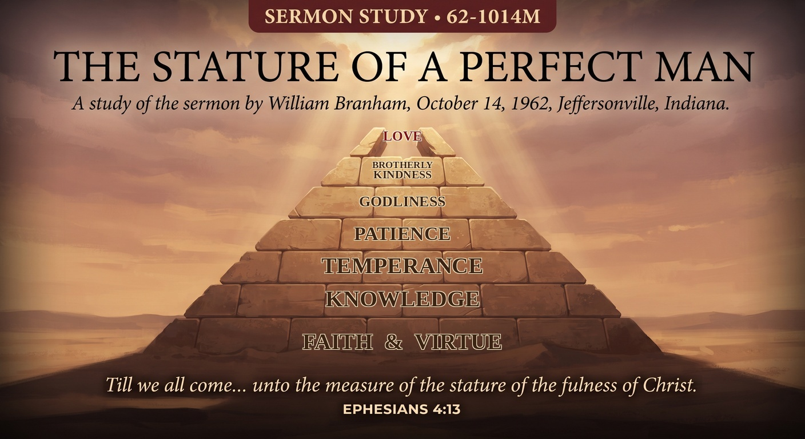

William Branham · October 14, 1962 · Branham Tabernacle, Jeffersonville, Indiana
♫ Listen to or read the full sermon at Voice Of God Recordings →

Brother Branham builds this message the way a mason builds a wall, one course at a time, and by the end he's constructed an actual pyramid on his chalkboard: seven stones stacked from a wide foundation to a narrow peak, with a gap left open at the very top. The stones are the eight qualities Peter lists in 2 Peter 1:5–7. The gap is the whole point of the sermon.
Peter's instruction reads like a chain: add to your faith virtue, to virtue knowledge, to knowledge temperance, to temperance patience, to patience godliness, to godliness brotherly kindness, and to brotherly kindness, love. Brother Branham refuses to let that be read as eight separate goals to chase one after another. Each stone sits on the one below it and can't stand without it. Knowledge without virtue underneath it is just information. Patience without knowledge underneath it is just waiting. The whole structure is cumulative, which means skipping a course doesn't get you to the top faster. It just means the pyramid can't hold.
Here's where the sermon turns. Faith through brotherly kindness gives you seven courses, seven stones, a completed base. But love, the eighth and final quality on Peter's list, isn't just one more stone of the same kind. Brother Branham identifies it as the capstone, and he points to something every Egyptologist already knows about the Great Pyramid at Giza: it has never had a capstone. The peak has always stood open. He reads that as a picture, a monument standing in the desert for thousands of years with its topmost stone missing, because the true Head, Christ, was rejected. The capstone is love, and the capstone is also the Holy Ghost bringing Christ's own nature down to finally cap off what human effort could build up to but never complete on its own.
Notice what this means about where love sits in the structure. It is not the easiest virtue to add, available at any point along the way. It's the last stone, the one that can only be set once everything beneath it is already in place. A believer doesn't skip straight to love, however sincerely, without the seven courses underneath actually being built first. That's a hard word for a religious culture that likes to treat love as a feeling anyone can conjure up on demand. Brother Branham is saying it's the opposite: it's the hardest stone to set, because it's the one stone a person cannot lay by themselves.
The honest question this message leaves isn't "do I love people." It's which course is missing. Is the foundation of faith actually laid, or assumed? Is there virtue underneath the knowledge you're so ready to argue for? Is there patience underneath the godliness you present to others? A pyramid missing a middle course doesn't just have a gap in the middle, it can't bear weight above that point at all. Brother Branham isn't offering eight suggestions. He's describing what has to be true, in order, before the capstone the whole structure was built for can ever come down and rest on top.
Source: The Stature Of A Perfect Man, preached October 14, 1962. Text © Voice Of God Recordings. This study reflects my own understanding of the message as a believer, not a verbatim reproduction of the sermon.
← Back to Sermon Studies